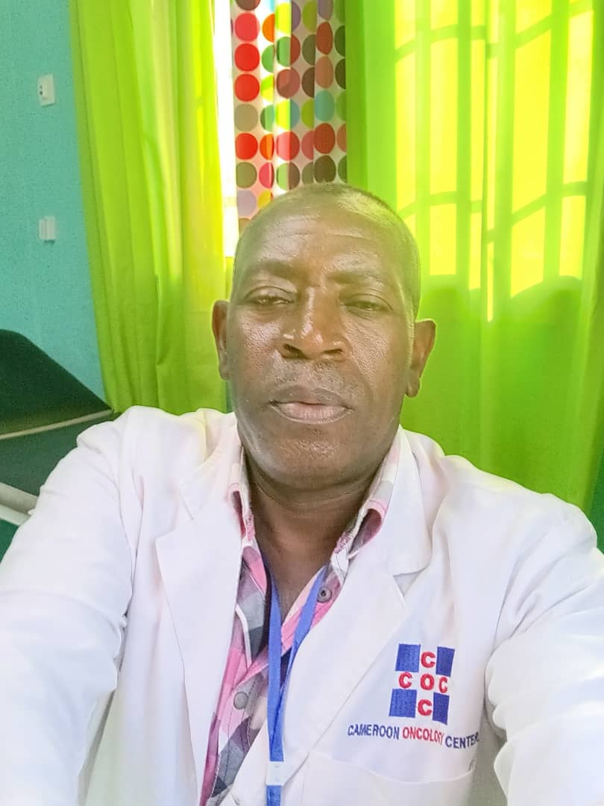

Caring for the Mind While Treating the Cancer
We provide compassionate psychological support for patients with cancer and their families, integrating mental health care into every step of the cancer journey.
"You are not alone. We are here to listen, support and walk with you."

FEDr. Fidele Eyebe leads our Psycho-Oncology and Psychology services, providing expert care to patients with cancer and their families. He is committed to integrating mental health into comprehensive cancer care to improve emotional well-being, treatment adherence and quality of life.
Support at Every Step of the Cancer Care Continuum
Sustained utilization throughout the year, demonstrating the high demand and importance of psychological support in cancer care at COC.
We work closely with Medical Oncology, Radiation Oncology, Surgery, Nursing, Nutrition, Palliative Care and Social Services to provide holistic, patient-centered care.